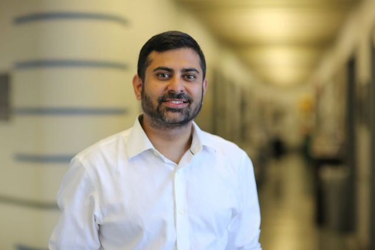

People
Towfique Raj, PhD
Principle Investigator

Towfique Raj, PhD, is a core faculty member in the Ronald M. Loeb Center for Alzheimer's Disease and an assistant professor in the Department of Neuroscience and the Department of Genetics and Genomics at Icahn School of Medicine at Mount Sinai, New York. Dr. Raj received his PhD in genetics from Cambridge University and completed a postdoctoral fellowship at the Broad Institute of MIT and Harvard. Before joining Mount Sinai, Dr. Raj was an instructor of neurology at Harvard Medical School and a visiting scholar at Stanford University. Dr. Raj received the Gates-Cambridge Scholarship, NIH Ruth L. Kirschstein Research Service Award and the Charleston Conference on Alzheimer's Disease Award. His research group uses powerful computational and experimental tools for genetic research and interdisciplinary approaches to understand the genetic factors driving neurodegenerative diseases with the ultimate goal of finding a cure. More recently, Dr. Raj's group is interested in linking genetic risk factors for Alzheimer's and Parkinson's disease to detectable changes in innate immune cells that may contribute to disease progression. A major direction of his laboratory has been to understand the role of peripheral immune cells in neurodegenerative disease pathogenesis (see the MyND study). His group is leading efforts to set up human cohorts for deep multi-omics profiling of immune cells. His long-term interest is to translate findings from these studies to potentially identify novel immune therapeutic targets and biomarkers.

Elisa Navarro is a postdoctoral fellow in the Raj Lab working to idenitfy, prioritize, and validate candidate genes implicated in the common neurodegenerative dieseases of Alzheimer's and Parkinson's from our in-house cohort of patient samples. Specifcally, she is interested in the role of myeloid cells in the development of those diseases. She obtained her Ph.D. in Pharmacology and Physiology in 2016 from the Autonoma University of Madrid in Spain. Elisa's background studies are in Biochemistry with a master's degree in Neuropsychopharmacology. Her past research experience focused on studying nicotinic receptors as target for neurodegenerative diseases in cellular and animal models. When not in the lab, you can find Elisa running around the city as she is an avid half-marathoner!

Ricardo is a Postdoctoral Fellow at Raj's Lab working with state-of-the-art computational methods and sequencing technologies to unveil the role of genomic structural variation in brain diseases. He obtained his PhD in Bioinformatics in 2017 from the Federal University of Minas Gerais (UFMG) in Brazil. During that period he also joined Nick Goldman's group at the EBI as a visiting student. Ricardo's background studies are in Mathematics and Systems Analysis with a master's degree also in Bioinformatics. His past research experiences include applying and developing bioinformatics tools and methods for NGS data analysis with specific interest in sequencing comparison methods, gene prediction, protein evolution, phylogenetics, (meta)genomics and transcriptomics. When not in the lab, Ricardo enjoys playing guitar and video games.

Katia's academic background includes a Bachelor’s degree in Computer Information System followed by a Master’s degree in Bioinformatics where she worked with transcriptome analysis. In 2017 she received her PhD from UFMG (Brazil) after a period as a visiting student at Salamanca University, Spain. Her thesis focused on the application of phylostratigraphy strategies to depict evolutionary gene co-expression networks in human tissues. Later on, she studied the identification of miRNAs as potential prognostic/diagnostic biomarkers in human diseases. Katia has experience working with database design and maintenance, gene expression analysis and bioinformatics-specific pipeline development. When not in the lab, Katia likes travelling, cycling and collecting "The Little Prince" books from different countries and languages!

Katia's academic background includes a Bachelor’s degree in Computer Information System followed by a Master’s degree in Bioinformatics where she worked with transcriptome analysis. In 2017 she received her PhD from UFMG (Brazil) after a period as a visiting student at Salamanca University, Spain. Her thesis focused on the application of phylostratigraphy strategies to depict evolutionary gene co-expression networks in human tissues. Later on, she studied the identification of miRNAs as potential prognostic/diagnostic biomarkers in human diseases. Katia has experience working with database design and maintenance, gene expression analysis and bioinformatics-specific pipeline development. When not in the lab, Katia likes travelling, cycling and collecting "The Little Prince" books from different countries and languages!

Madison Parks is a Associate Researcher in the Raj Lab working to idenitfy, prioritize, and validate candidate genes implicated in the common neurodegenerative dieseases of Alzheimer's and Parkinson's from our in-house cohort of patient samples. She obtained her Bachelor of Science from Dickinson College in 2017 with a degree in Neuroscience. She is specifically interested in diseases of neurodegeneration and neurodevelopment, and completed an undergraduate honors thesis on the development of central chemoreceptors and the on-set of fetal breathing movements in mice, which has larger implications for Sudden Infant Death Syndrome. She is passionate about medicine and see's herself in a career as a physcian. Outside of the lab, Madison enjoys playing tennis and wheelwork ceramics!

Evan Udine received his M.S. from Columbia University in 2018 in Neuroscience and his B.A. in Neuroscience and Behavior from Vassar College in 2016. Previously, Evan worked with Dr. Herbert Weissbach in the Center for molecular biology and biotechnology, where he was investigating the role of methionine sulfoxide reductase in response to oxidative damage. Since joining the lab full-time, Evan has been involved in the MyND project, where he has helped with sample processing and led the computational analyses. When not working, Evan is usually gorging himself on whatever he can find; be it cake, cookies, candies, chocolates, chips, or his most favorite of all, the illusive Taco Bell. His passion for Taco Bell outweighs all of his other qualities, and he will stop at nothing to secure a cheesy gordita crunch. If you're reading this, please help Evan to face his addiction. Your intervention can help.

Maojuan is a recent addition to the Raj Lab and has joined us as a Senior Associate Researcher. She has been instrumental in the processing and organization of patient samples recruited from our various clinics. Prior to her position in our lab, she was a lab supervisor in the Shapiro lab at Mount Sinai where she oversaw the daily operation of the lab, ensured compliance with safety and regulatory requirements, provided orientation and training for new personnel, built implants for electrophysiology recording; performed histology procedures and microscopic imaging, maintained and updated IACUC protocols. All of her previous experience has made her an excellent addition to our team. She obtained her medical degree from Weifang Medical College in China, and was a pediatrician before she came to the U.S.

Brian Schilder completed his undergraduate in Applied Mathematics at Queens College in 2009 and received his Masters of Arts in Biology from Hunter College in 2012. His background is in "wet lab" where he has developed his skills in a wide range of techniques in molecular/cell biology and mouse models. Starting in 2016, Tamjeed joined Raj Lab as a research coordinator for a translational research initiative investigating functional genomics and genetic biomarkers in patients with neurodegenerative diseases. Aside from building the research cohort, which has now expanded to include multiple external sites, Tamjeed also coordinates autopsies for those who are interested in donating their brain for research. When he is not busy wearing multiple hats, he enjoys patient outreach, martial arts, volunteering, and the occasional rolling in the mud at obstacle races.

Tamjeed Sikder completed his undergraduate in Applied Mathematics at Queens College in 2009 and received his Masters of Arts in Biology from Hunter College in 2012. His background is in "wet lab" where he has developed his skills in a wide range of techniques in molecular/cell biology and mouse models. Starting in 2016, Tamjeed joined Raj Lab as a research coordinator for a translational research initiative investigating functional genomics and genetic biomarkers in patients with neurodegenerative diseases. Aside from building the research cohort, which has now expanded to include multiple external sites, Tamjeed also coordinates autopsies for those who are interested in donating their brain for research. When he is not busy wearing multiple hats, he enjoys patient outreach, martial arts, volunteering, and the occasional rolling in the mud at obstacle races.